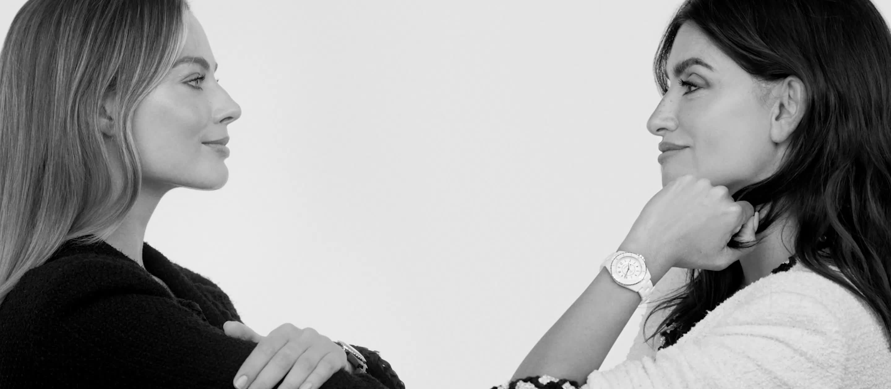
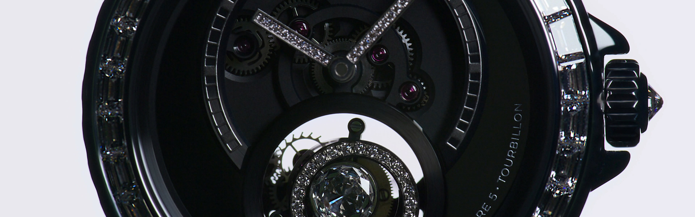
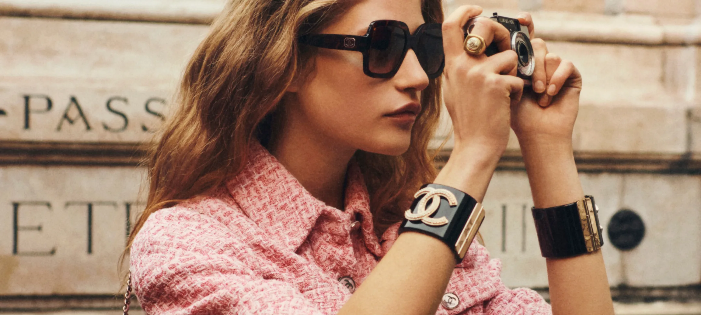
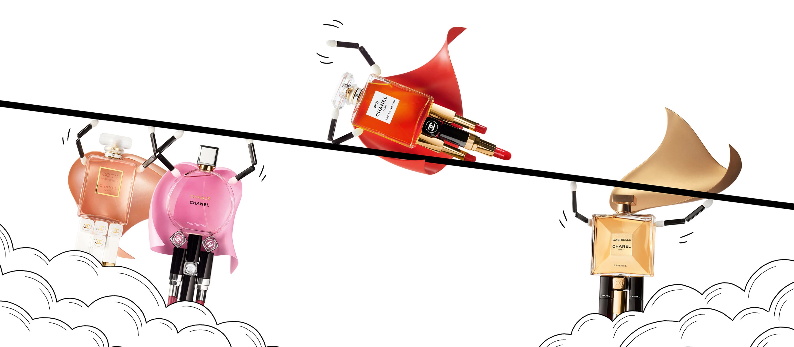

about chanel watches makeup Nailpolish eyewear gallery

/The House of Chanel originated in 1909, when Gabrielle Chanel opened a millinery shop at 160 Boulevard Malesherbes, the ground floor of the Parisian flat of the socialite and textile businessman Étienne Balsan, of whom she was the mistress.[3] Because the Balsan flat also was a salon for the French hunting and sporting élite, Chanel had the opportunity to meet their demi-mondaine mistresses who, as such, were women of fashion, upon whom the rich men displayed their wealth – as ornate clothes, jewellery, and hats.

The Chanel wristwatch division was established in 1987.[96] In 1995, division presented a second design, the Matelassé.[96] Although the Première and Matelassé wristwatches were successful products, the presentation, in 2000, of the Chanel J12 line of unisex style wristwatches, made of ceramic materials, established Chanel wristwatches as a Chanel marque.[96] The J12 line of wristwatches features models in four dial-face sizes: 33mm, 38mm, 41mm, and 42mm.[96][97] In 2008, Chanel S.A. and Audemars Piguet developed the ceramic Chanel AP-3125 clockwork, exclusive to the House of Chanel.
Cosmetics are the most accessible Chanel product, with counters in department stores across the world, including Harrods, Galeries Lafayette, Bergdorf Goodman, Hudson's Bay, and David Jones, Wojooh, Selfridges & Co,[92] John Lewis, Boots as well as its own beauty boutiques.

Nothing lights up a face quite like a pair of CHANEL glasses. The House's eyewear campaign is an affirmation of this emblematic and timeless identity. Shot by Karim Sadli, the black and white portraits of models Rianne Van Rompaey, Blesnya Minher and Pan Haowen cut to the essential to highlight each design

In 1924, Pierre Wertheimer founded Parfums Chanel, to produce and sell perfumes and cosmetics; the parfumerie proved to be the most profitable business division of the Chanel S.A. corporation.[9][90] Since its establishment, parfumerie Chanel has employed four perfumers: